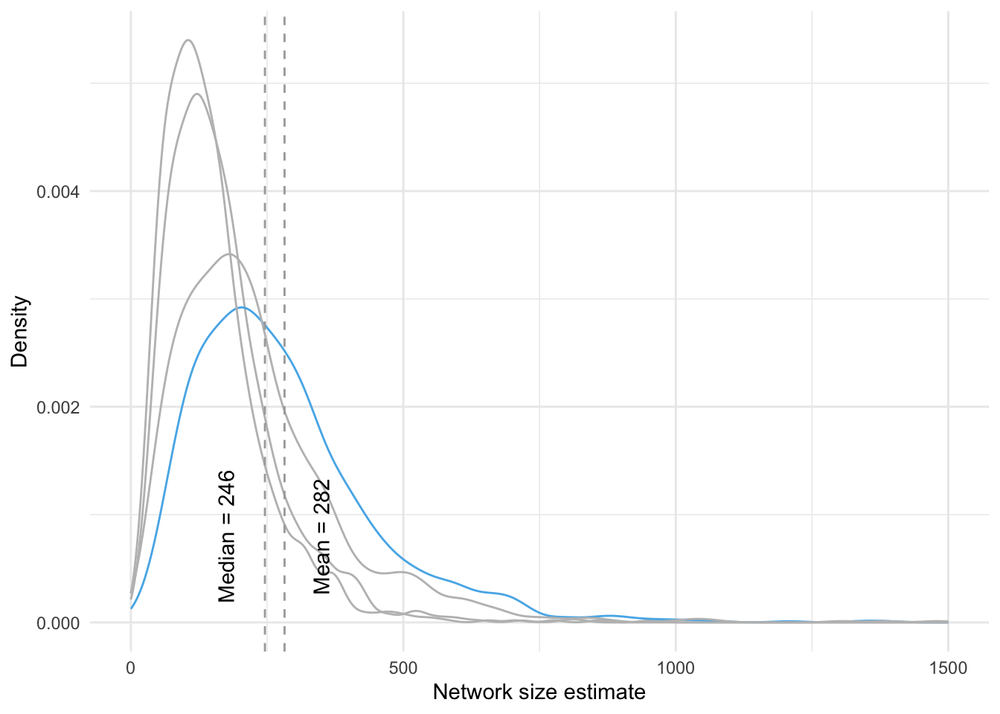

Descriptive analyses
Bas Hofstra
Last compiled on December, 2024
This is the code with which we render our descriptive analyses
1 Initatiating R environment
Start out with a custom function to load a set of required packages.
# packages and read data
rm(list = ls())
# (c) Jochem Tolsma
fpackage.check <- function(packages) {
lapply(packages, FUN = function(x) {
if (!require(x, character.only = TRUE)) {
install.packages(x, dependencies = TRUE, repos = "http://cran.us.r-project.org")
library(x, character.only = TRUE)
}
})
}
packages = c("haven", "coda", "matrixStats", "parallel", "MASS", "doParallel", "dplyr", "cowplot", "tidyverse",
"naniar", "dotwhisker", "gt", "reshape2", "VGAM", "expss", "Hmisc", "poweRlaw", "fitdistrplus", "grid",
"ggplotify", "smplot2")
fpackage.check(packages)#> [[1]]
#> NULL
#>
#> [[2]]
#> NULL
#>
#> [[3]]
#> NULL
#>
#> [[4]]
#> NULL
#>
#> [[5]]
#> NULL
#>
#> [[6]]
#> NULL
#>
#> [[7]]
#> NULL
#>
#> [[8]]
#> NULL
#>
#> [[9]]
#> NULL
#>
#> [[10]]
#> NULL
#>
#> [[11]]
#> NULL
#>
#> [[12]]
#> NULL
#>
#> [[13]]
#> NULL
#>
#> [[14]]
#> NULL
#>
#> [[15]]
#> NULL
#>
#> [[16]]
#> NULL
#>
#> [[17]]
#> NULL
#>
#> [[18]]
#> NULL
#>
#> [[19]]
#> NULL
#>
#> [[20]]
#> NULL
#>
#> [[21]]
#> NULLrm(packages)
load("data/dutch_netsize_analyses_revision.rda")2 Descriptives independent variables
The code below generates the descriptive values which are used for Tables 1 and 2.
# descriptive table not automated: TABLE 1
table(df$work)#>
#> 0 1
#> 583 666psych::describe(df$work)#> vars n mean sd median trimmed mad min max range skew kurtosis se
#> X1 1 1249 0.53 0.5 1 0.54 0 0 1 1 -0.13 -1.98 0.01psych::describe(df$hhsize)#> vars n mean sd median trimmed mad min max range skew kurtosis se
#> X1 1 1249 2.13 1.12 2 1.98 1.48 1 8 7 1.34 2.26 0.03table(df$agecat)#>
#> 4 1 2 3
#> 299 208 230 512# 1 Maj 2 west 3 nonwest
table(df$income)#>
#> 2 1 3
#> 440 627 182# 1 < modal 2 > modal 3 unknown
psych::describe(df$worthhouse)#> vars n mean sd median trimmed mad min max range skew kurtosis se
#> X1 1 1249 2.67 0.89 2.54 2.58 0.73 0.95 9.96 9.01 1.75 7.12 0.03table(df$woman)#>
#> 0 1
#> 609 640psych::describe(df$woman)#> vars n mean sd median trimmed mad min max range skew kurtosis se
#> X1 1 1249 0.51 0.5 1 0.52 0 0 1 1 -0.05 -2 0.01table(df$opl2)#>
#> 0 1
#> 783 466summary(df$opl2)#> Min. 1st Qu. Median Mean 3rd Qu. Max.
#> 0.0000 0.0000 0.0000 0.3731 1.0000 1.0000# 1 prim/sec 2 lower tert 3 higher tert
# psych::describe(df$neighdens)
# this is for the correlation table df$educ3 <- df$opl df$educ3 <-
# as.numeric(as.character(df$educ3))
table(df$migr3)#>
#> 1 2 3
#> 1131 62 56# cor(as.matrix(df[df$income!=3,c('income','worthhouse')]))
# rcorr(as.matrix(df[,c('work', 'hhsize', 'leeftijd10', 'woman', 'educ3', 'neighdens', 'worthhouse'
# )]), type = 'pearson')summary(df$numwoman)#> Min. 1st Qu. Median Mean 3rd Qu. Max.
#> 0.00 5.00 8.00 10.32 14.00 283.00summary(df[df$woman == 1, c("numwoman")])#> Min. 1st Qu. Median Mean 3rd Qu. Max.
#> 0.00 5.00 9.00 11.27 14.00 283.00summary(df[df$woman == 0, c("numwoman")])#> Min. 1st Qu. Median Mean 3rd Qu. Max.
#> 0.000 4.000 8.000 9.332 13.000 57.000summary(df$numman)#> Min. 1st Qu. Median Mean 3rd Qu. Max.
#> 0.00 6.00 10.00 12.07 15.00 159.00summary(df[df$woman == 1, c("numman")])#> Min. 1st Qu. Median Mean 3rd Qu. Max.
#> 0.00 6.00 9.00 11.14 14.00 159.00summary(df[df$woman == 0, c("numman")])#> Min. 1st Qu. Median Mean 3rd Qu. Max.
#> 0.00 6.00 11.00 13.04 17.00 103.00summary(df$samegender)#> Min. 1st Qu. Median Mean 3rd Qu. Max. NA's
#> 0.00 44.44 53.85 54.17 64.71 100.00 11summary(df[df$woman == 1, c("samegender")])#> Min. 1st Qu. Median Mean 3rd Qu. Max. NA's
#> 0.00 40.91 50.00 49.43 58.82 100.00 4summary(df[df$woman == 0, c("samegender")])#> Min. 1st Qu. Median Mean 3rd Qu. Max. NA's
#> 0.00 50.00 59.26 59.19 69.39 100.00 7summary(df$numeduchigh)#> Min. 1st Qu. Median Mean 3rd Qu. Max.
#> 0.000 0.000 0.000 2.722 2.000 400.000summary(df[df$opl2 == 1, c("numeduchigh")])#> Min. 1st Qu. Median Mean 3rd Qu. Max.
#> 0.000 0.000 1.000 4.837 3.000 400.000summary(df[df$opl2 == 0, c("numeduchigh")])#> Min. 1st Qu. Median Mean 3rd Qu. Max.
#> 0.000 0.000 0.000 1.464 1.000 250.000summary(df$numeduclow)#> Min. 1st Qu. Median Mean 3rd Qu. Max.
#> 0.00 0.00 0.00 1.85 1.00 500.00summary(df[df$opl2 == 1, c("numeduclow")])#> Min. 1st Qu. Median Mean 3rd Qu. Max.
#> 0.000 0.000 0.000 1.618 0.000 200.000summary(df[df$opl2 == 0, c("numeduclow")])#> Min. 1st Qu. Median Mean 3rd Qu. Max.
#> 0.000 0.000 0.000 1.988 1.000 500.000summary(df$sameeduc)#> Min. 1st Qu. Median Mean 3rd Qu. Max. NA's
#> 0.00 33.33 66.67 62.66 100.00 100.00 640summary(df[df$opl2 == 1, c("sameeduc")])#> Min. 1st Qu. Median Mean 3rd Qu. Max. NA's
#> 0.00 66.67 100.00 80.85 100.00 100.00 191summary(df[df$opl2 == 0, c("sameeduc")])#> Min. 1st Qu. Median Mean 3rd Qu. Max. NA's
#> 0.00 0.00 50.00 47.69 80.48 100.00 4493 Comparing naive estimations
The code below generates Figure 1 from the paper and runs a number of correlations found on page X.
# comps <- gather(df[, c('nsize_naive', 'nsize_b1b2', 'nsize_b3', 'nsize_n1', 'nsize_n2',
# 'nsize_n3', 'nsize_n123')]) comparisons <- ggplot(comps[comps$value < 2000, ], aes(x=value, color
# = key)) + geom_density(size = 0.5) + theme_minimal() + labs(x = 'Network size estimate', y =
# 'Density') + scale_color_manual(name = 'Estimation scenario', breaks = c('nsize_naive',
# 'nsize_b1b2', 'nsize_b3', 'nsize_n1', 'nsize_n2', 'nsize_n3', 'nsize_n123'), labels = c('Naive
# estimator: all X's', 'Battery 1: Tert. educ., elec vehicle, etc.', 'Battery 2: all names', 'Names
# 1: Sophie, Anna, Thomas, Willem', 'Names 2: Julia, Elisabeth, Max, Ali', 'Names 3: Sanne,
# Cornelia, Kevin, Mohammed', 'Names1+2+3'), values = c('#000000', '#E69F00', '#56B4E9', '#009E73',
# '#0072B2', '#D55E00', '#CC79A7', 'darkgrey')) # save ggsave('output/comparisons.pdf', plot =
# comparisons, device = 'pdf', scale = 1, width = 10, height = 5.5, units = c('in'), dpi =
# 'retina') # # correlation battery 1 and 2 # cor(df$nsize_b1, df$nsize_b2) # # # correlation
# battery 1 and all # cor(df$nsize_b1, df$nsize_naive) # correlation battery 1+2 and all
# cor(df$nsize_b1b2, df$nsize_naive) # correlation battery 3 (names) and all cor(df$nsize_b3,
# df$nsize_naive) # correlation names 1 and all cor(df$nsize_n1, df$nsize_naive) # correlation
# names 2 and all cor(df$nsize_n2, df$nsize_naive) # correlation names 3 and all cor(df$nsize_n3,
# df$nsize_naive) # correlation names 123 and all cor(df$nsize_n123, df$nsize_naive) # sample 5
# columns of scenarios and correlate with naive estimand set.seed(1987) sample(13:183, 5) #
# correlation scenario 85 and naive cor(df$nsize_naive, df[, 85]) # correlation scenario 36 and
# naive cor(df$nsize_naive, df[, 36]) # correlation scenario 150 and naive cor(df$nsize_naive, df[,
# 150]) # correlation scenario 14 and naive cor(df$nsize_naive, df[, 14]) # correlation scenario
# 125 and naive cor(df$nsize_naive, df[, 125]) comparisons4 Comparing Bayesian estimations
The code below generates Figure 2 from the paper associated with the text on page X.
# netsizes <- read.table(file = 'data/dutch_netsize_desc.txt') # VIZ of netsize netsize_l <-
# gather(netsizes) dens1 <- ggplot(netsize_l[netsize_l$value < 2000,], aes(x=value, color = key)) +
# geom_density(alpha = .2, size = 0.1) + theme_minimal() + theme(legend.position = 'none') + labs(x
# = 'Network size estimate', y = 'Density') +
# geom_vline(xintercept=as.numeric(psych::describe(netsize_l[, 2])[3]), color = 'darkgrey',
# linetype = 2) + geom_vline(xintercept=as.numeric(psych::describe(netsize_l[, 2])[5]), color =
# 'darkgrey', linetype = 2) + annotate('text', x = 490, y = 0.0004, color = 'darkgrey', angle = 90,
# label = paste0('Mean = ', round(as.numeric(psych::describe(netsize_l[, 2])[3]), digits = 0))) +
# annotate('text', x = 340, y = 0.0004, color = 'darkgrey', angle = 90, label = paste0('Median = ',
# round(as.numeric(psych::describe(netsize_l[, 2])[5]), digits = 0))) + ggtitle('B) Distribution of
# network sizes, all scenarios') # Get lower triangle of the correlation matrix
# get_lower_tri<-function(cormat){ cormat[upper.tri(cormat)] <- NA return(cormat) } mat <-
# cor(netsizes) lower_tri <- get_lower_tri(mat) melted_cormat <- reshape2::melt(lower_tri) #
# data.table also has melt funciton that won't work on matrices melted_cormat$Var2 <-
# as.character(melted_cormat$Var2) melted_cormat$Var1 <- as.character(melted_cormat$Var1)
# melted_cormat <- melted_cormat[!melted_cormat$Var2 == melted_cormat$Var1,] melted_cormat <-
# melted_cormat[!is.na(melted_cormat$value), ] # Viz of correlations between netsize estimates
# dens2 <- ggplot(melted_cormat, aes(x=value)) + geom_density(size = 0.3) + xlim(0.915, 1) +
# theme_minimal() + labs(x='Pearson correlation', y = 'Density') + geom_vline(xintercept = .95,
# color = 'darkgrey', linetype = 2) + ggtitle('A) Distributions of correlations between network
# size scenarios') + geom_segment(x = 0.95, y = 125, xend = .99, yend = 125, linetype = 2, color =
# 'darkgrey', arrow = arrow(length = unit(0.25, 'cm'))) + annotate('text', x = .97, y = 135, color
# = 'darkgrey', angle = 0, label = paste0(round(nrow(melted_cormat[melted_cormat$value > .95,
# ])/nrow(melted_cormat)*100, digits = 1),'% of correlations are > .95')) # lay 'm out on the grid
# denses <- plot_grid(dens2, dens1, nrow = 1) # save ggsave('output/densities.pdf', plot = denses,
# device = 'pdf', scale = 1, width = 12, height = 4, units = c('in'), dpi = 'retina') # denses5 Comparing four different estimation scenarios
The code below generates Figure X from the paper associated with the text on page X.
# VIZ of netsize
netsize_l <- gather(df[, c("netsover1", "netsover2", "netsover3", "netsover4", "netsover5")])
round(summary(df$netsover4)[3], digits = 0)#> Median
#> 446round(summary(df$netsover4)[4], digits = 0)#> Mean
#> 518dens1 <- ggplot(netsize_l, aes(x = value, color = key)) + geom_density(alpha = 0.2, size = 0.5) + theme_minimal() +
theme(legend.position = "none") + labs(x = "Network size estimate", y = "Density") + scale_color_manual(values = c("grey",
"grey", "grey", "#56B4E9", "grey")) + geom_vline(xintercept = 446, color = "darkgrey", linetype = 2) +
geom_vline(xintercept = 518, color = "darkgrey", linetype = 2) + annotate("text", x = 560, y = 8e-04,
color = "black", angle = 90, label = "Mean = 518") + annotate("text", x = 400, y = 8e-04, color = "black",
angle = 90, label = "Median = 446") + xlim(c(0, 1500))
# save
ggsave("output/densities_revision.pdf", plot = dens1, device = "pdf", scale = 1, width = 5, height = 4,
units = c("in"), dpi = "retina")
dens1
6 Distributional fit
We now fit a “complementary cumulative degree distribution” and check how it fits.
#df$netsize <- round(rowSums(df[,c(14:185)]) / length(14:185), 0)
df <- df[!df$netsover4 > 5000, ]
degrees <- round(df$netsover4, 0)
degr_pl <- displ$new(degrees) # create a discrete powerlaw distribution object
# with estimating lower threshold:
degr_ln_xmin <- dislnorm$new(degrees)
est = estimate_xmin(degr_ln_xmin)
degr_ln_xmin$setXmin(est)
# without lower threshold:
degr_ln_noxmin <-fitdist(degrees, "lnorm")
# Goodness of fit for lognorm, no xmin:
gof_degr_ln_noxmin <- gofstat(degr_ln_noxmin, fitnames = "Log-normal", discrete = TRUE)
gof_degr_ln_noxmin#> Chi-squared statistic: 157.3705
#> Degree of freedom of the Chi-squared distribution: 27
#> Chi-squared p-value: 2.32758e-20
#> Chi-squared table:
#> obscounts theocounts
#> <= 100 43.00000 19.38509
#> <= 146 41.00000 50.71990
#> <= 173 43.00000 43.83381
#> <= 199 41.00000 49.34165
#> <= 226 41.00000 56.17790
#> <= 239 42.00000 28.17174
#> <= 262 43.00000 50.75980
#> <= 292 46.00000 66.55368
#> <= 321 43.00000 63.23835
#> <= 339 41.00000 38.20939
#> <= 368 41.00000 59.33792
#> <= 385 48.00000 33.33264
#> <= 412 43.00000 50.54138
#> <= 422 42.00000 17.94651
#> <= 451 44.00000 49.64340
#> <= 477 41.00000 41.47955
#> <= 505 42.00000 41.53671
#> <= 517 41.00000 16.83488
#> <= 542 41.00000 33.27706
#> <= 574 42.00000 39.21334
#> <= 605 43.00000 34.59999
#> <= 653 42.00000 47.58213
#> <= 697 41.00000 37.90051
#> <= 753 42.00000 41.38963
#> <= 798 41.00000 28.46410
#> <= 872 43.00000 39.06397
#> <= 1007 41.00000 52.20860
#> <= 1172 41.00000 41.15092
#> <= 1441 41.00000 37.00800
#> > 1441 25.00000 40.09744
#>
#> Goodness-of-fit criteria
#> Log-normal
#> Akaike's Information Criterion 17622.53
#> Bayesian Information Criterion 17632.79x_seq <- seq(0, max(degrees), length = 500)
# For plotting the no x_min version of LN
ln_fit_ccdf <- 1 - plnorm(x_seq, meanlog = degr_ln_noxmin$estimate[1], sdlog = degr_ln_noxmin$estimate[2])
# capture data that make the plot
pd1 <- plot(degr_pl, draw = F) # plot data 1, empirical distr
pd2 <- lines(degr_ln_xmin, draw = F) # plot data 2 no xmin
pd3 <- data.frame(cbind(x_seq, ln_fit_ccdf)) # plot data 3 with xmin
# now render it a ggplot
ccdfplot <- ggplot() +
geom_point(data=pd1, aes(x = x, y = y), shape=1) +
#geom_line(data=pd2, aes(x = x, y = y, color = "Log-normal fit, w/ x_min")) +
geom_line(data=pd3, aes(x = x_seq, y = ln_fit_ccdf, color = "Log-normal fit, no x_min")) +
labs(x="Extended network size", y="CCDF") +
scale_color_manual(name = "Fit", values = c(#"Log-normal fit, w/ x_min" = "green",
"Log-normal fit, no x_min" = "purple")) +
theme_bw() +
theme(legend.position = c(0.22, 0.2)) +
scale_x_log10(breaks = c(50,100,200,500,1000,2000), limits = c(min(pd1$x), max(pd1$x))) + scale_y_log10() +
ggtitle("CCDF plot of average degree")
# save
ggsave("output/ccdfplot.pdf", plot = ccdfplot, device = "pdf",
scale = 1, width = 6, height = 4, units = c("in"),
dpi = "retina")
# tryout <- plot_grid(dens2, dens1, ccdfplot, nrow = 1)
#
# ggsave("output/comps_combined.pdf", plot = tryout, device = "pdf",
# scale = 1, width = 16, height = 5, units = c("in"),
# dpi = "retina")
### original plot in Base r
# # Plotting two versions of LN
# plot(degr_pl, xlab="Number of contacts", ylab="CCDF")
# lines(degr_ln_xmin, col = "green", lwd = 2)
# lines(x_seq, ln_fit_ccdf, col = "purple", lwd = 2)
# legend(x = "bottomleft",
# legend = c("Log-normal fit, w/ x_min",
# "Log-normal fit, no x_min"
# ),
# col = c("green","purple"),
# lwd = 2)
ccdfplot
dfans <- df[, c("uni", "hbo", "mbo", "dochterzoon", "tweeling", "corona", "elauto", "scooter", "vegan",
"Sophie", "Julia", "Sanne", "Lisa", "Laura", "Maria", "Linda", "Johanna", "Monique", "Ester", "Anna",
"Elisabeth", "Cornelia", "Wilhelmina", "Amira", "Samira", "Sara", "Daan", "Sem", "Thomas", "Max",
"Kevin", "Johannes", "Dennis", "Jeroen", "Jan", "Marcel", "Cornelis", "Hendrik", "Petrus", "Willem",
"Ali", "Mohammed", "Noor")] # take mean of each of the cats
means <- colMeans(dfans)
ref1 <- c(84957, 75214, 145600, 168066, 2500, 1558549)
# ORDER: uni, hbo, mbo, dochter/zoon, tweeling, corona
ref2 <- c(273259, 460618, 261000)
# ORDER: elecauto, scooter, vegan,
ref3 <- c(15276, 16350, 27394, 21200, 25681, 334502, 29955, 266522, 39481, 2692, 136296, 110231, 112807,
98208, 1386, 2186, 11640, 22704, 13276, 40543, 17024, 23167, 307032, 36411, 49182, 186746, 35973,
134956, 118610, 86500, 102296, 4213, 5003, 4517)
# ORDER: Sophie, Julia,Sanne,Lisa,Laura,Maria,Linda,Johanna,Monique,Ester,
# Anna,Elisabeth,Cornelia,Wilhelmina,Amira,Samira,Sara,Daan,Sem,
# Thomas,Max,Kevin,Johannes,Dennis,Jeroen,Jan,Marcel,Cornelis,Hendrik,Petrus,
# Willem,Ali,Mohammed,Noor
pops <- c(ref1, ref2, ref3)
fig <- data.frame(cbind(means, pops))
cor(fig)#> means pops
#> means 1.000000 0.913452
#> pops 0.913452 1.000000cor(fig[!fig$pops > 5e+05, ])#> means pops
#> means 1.0000000 0.3414986
#> pops 0.3414986 1.0000000cor(fig[!fig$pops > 2e+05, ])#> means pops
#> means 1.0000000 0.4716289
#> pops 0.4716289 1.0000000cor(fig[fig$pops < 50000, ])#> means pops
#> means 1.0000000 0.8913344
#> pops 0.8913344 1.0000000ex1 <- ggplot(fig, aes(x = pops, y = means)) + geom_point() + xlim(x = c(0, 50000)) + ylim(c(0, 2.5)) +
geom_smooth(method = "lm") + geom_text(label = rownames(fig), nudge_y = 0.1) + theme_minimal() +
xlab("Population size") + ylab("Average number mentioned") + sm_statCorr() + ggtitle("A) Population size <50k")
ex1
ex2 <- ggplot(fig, aes(x = pops, y = means)) + geom_point() + xlim(x = c(0, 5e+05)) + ylim(c(0, 2.5)) +
geom_smooth(method = "lm") + geom_text(label = rownames(fig), nudge_y = 0.1) + theme_minimal() +
xlab("Population size") + ylab("Average number mentioned") + sm_statCorr() + ggtitle("B) Population size <500k")
ex2
ex3 <- ggplot(fig, aes(x = pops, y = means)) + geom_point() + geom_smooth(method = "lm") + geom_text(label = rownames(fig),
nudge_y = 0.1) + theme_minimal() + xlab("Population size") + ylab("Average number mentioned") + sm_statCorr() +
ggtitle("C) All population sizes")
ex3
ex <- plot_grid(ex1, ex2, ex3, nrow = 1)
ggsave("output/popsizes.pdf", plot = ex, device = "pdf", scale = 1, width = 16, height = 5, units = c("in"),
dpi = "retina")